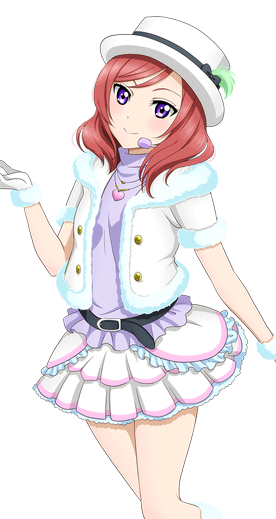

西木野真姬
————Maki Nishikino———
| 中文名 | 西木野真姬 | 就读学校 | 音乃木坂学院 |
| 外文名 | 西木野 真姫 （にしきの まき） |
年 级 | 高中一年级 |
| 别 称 | 真姬、真姬酱 | 所属团体 | μ's、BiBi |
| 配 音 | Pile | 擅长科目 | 全部，尤其数学 |
| 生 日 | 4月19日（白羊座） | 擅长料理 | 焗烤通心粉 |
| 年 龄 | 15岁 | 儿时梦想 | 医生 |
| 性 别 | 女 | 属 性 | 傲娇、大小姐 |
| 身 高 | 161cm | 魅力点 | 洋溢出知性的美貌 |
| 出生地 | 日本东京千代田区 | 口头禅 | ナニソレ!イミワカンナイ! |
| 三 围 | B78/W56/H83 | 应援色 | 红色 |
- 
角色背景
西木野真姬，15岁，高中一年级。双亲经营着大医院的富家大小姐，打算继承双亲成为医生为目标而学习各种相关事物。歌唱出类拔萃，作曲一流，钢琴也备受期待的一年级生。
凭着与生俱来的气魄甚至敢于强硬地与高年级生争论，其实也有着很寂寞的一面。避免与周围的人有所关系，因此经常独自一人。每逢休息时间就到图书馆，放学后就到音乐教室弹奏钢琴。有着玩弄发梢的习惯小动作。
相貌衣着
高挑，冷艳的冰美人。留有一头红色披肩长发，紫色眼睛，是九人中唯一的吊眼梢。洋溢着才智的美貌是其魅力所在。
平时在校期间会身着音乃木板学院的校服。胸前系着代表一年级的蓝色花纹领结，蓝色西服，裙子则是蓝色格子百褶裙。而在演出时会换上各式各样绚丽的演出服。而在早期的设定里真姬有两套校服，一套是黄毛衣，蓝格子裙，蓝领结，但领结不区分年级；一套则是白毛衣，黑裙，绿领结。
由于企划发展中画师变更及主画师画风转变，真姬早期的人物形象与后期动画版有着很大的差异。
性格特点
早期设定
长相可爱，因此自信心十足，有时甚至会满溢出来发展成自恋，思考问题时常常会联想到不切实际的地方去。平日的说话和做事风格都比较大胆，不过也有着柔情的一面（海未曾提到真姬其实也擅长照顾别人）。
现役设定
气势与自尊心强烈，不轻易服输的性格。不擅长表露本心，所以经常会做出言行不一的事情，遇到了尾崎后渐渐学会了向自己喜欢的人和物坦率地表达自己的情感。
对待家人的安排向来是言听计从，在遇见μ's之前从来没有试着反抗过。
虽然自尊心强烈，但内心却是出乎意料的单纯。直至今日还坚信着圣诞老人的存在。
角色生活
平时的兴趣爱好是购物、拍照和天文观测。喜欢的食物是番茄，讨厌的食物则是柑橘。
在音乐上有着天赋，学过芭蕾舞和小提琴，擅长作曲、唱歌和弹钢琴，学习成绩也名列前茅，但体力不好，运动神经很差（九人中唯一不会骑自行车的），被作为西木野综合医院的继承人而培养着。除了学校的日常学习之外，还参加了许多父母安排的学习班，故很少有与同学交流沟通的机会，因此经常独自一人。每逢休息时间就到图书馆，放学后就到音乐教室弹奏钢琴。独自一人的情况在遇到并加入μ's后有所改善。
声优的信
最初
谢谢你让我见识到了无数美妙的光景。
真姬酱期初放弃了音乐，其实我也放弃过。
若未曾有过与你的邂逅，我便无法想如今这般享受着音乐带给我的快乐。
你们两人的相似之处是？每当被这样问起，
”恩，哪里像呢？或许没什么相似之处吧“我都会做出如此回答，
但如今像这般再次握起曾丢弃过的手中的笔，如此重要的地方，这不是蛮像的嘛！
我们μ’s成员能够邂逅彼此，并顺次走向独立
大家一起欢笑，一起伤感，一起充实的成就感，一起尝试丰富多彩的新事物
让我们再次懂得了不少未曾体验的事物呢！
正因如此，我才会发自心底的倍加感谢你。
在这之后的永远，你我都将是无可替代的存在。
翻译By:初音未来感谢祭